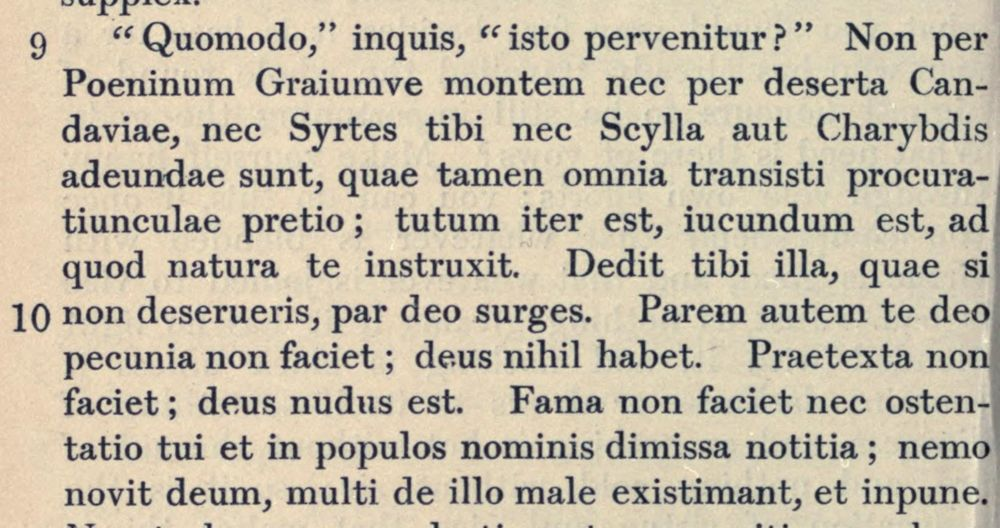

“Deus nudus est” (§§ 9–10)
Latin: Seneca, Ep. XXXI §§ 9–10, Gummere’s Loeb text (1917), scan n249. Highlighted: the words Lecky quotes.

“How,” you ask, “does one get there?” You need not cross the Pennine or the Graian Alps, nor the wastes of Candavia; you need not face the Syrtes, or Scylla, or Charybdis, though you have passed through all of them for the price of a petty governorship. The road for which nature has equipped you is safe and pleasant. She has given you gifts which, if you do not abandon them, will raise you to equality with God. But money will not make you God’s equal: God has nothing. The bordered robe of office will not: God is naked. Fame will not, nor showing yourself off and spreading the knowledge of your name among the peoples: no one knows God, many think ill of him, and go unpunished.
Translation: this edition’s draft.
Original Latin
“Quomodo,” inquis, “isto pervenitur?” Non per Poeninum Graiumve montem nec per deserta Candaviae, nec Syrtes tibi nec Scylla aut Charybdis adeundae sunt, quae tamen omnia transisti procuratiunculae pretio; tutum iter est, iucundum est, ad quod natura te instruxit. Dedit tibi illa, quae si non deserueris, par deo surges. Parem autem te deo pecunia non faciet; deus nihil habet. Praetexta non faciet; deus nudus est. Fama non faciet nec ostentatio tui et in populos nominis dimissa notitia; nemo novit deum, multi de illo male existimant, et inpune.
The praetexta was the purple-bordered toga worn by Roman magistrates; Lucilius, as procurator, had a right to the official dress. Seneca’s point is that God lacks every mark of status, so a man does not need them to resemble him.
Further down the rabbit hole
Sources that Lecky cites in the notes next to the ones that cite this page.
- Raoul-Rochette, Cours d’archéologieWhy Greek statues were naked: “God is naked”, and emperors stripped for apotheosis
- Lessing, LaokoonWhy the Greek painter hid Agamemnon’s face: beauty before expression
- Matter, Histoire critique du gnosticismeKilled for looking pale: Cathars, fasting and the eleventh-century ‘Manichaeans’
- Didron, Iconographie chrétienneHow medieval art pictured Christ the Judge
- Vitet, Études sur l’histoire de l’artWhy the saints in Rome’s mosaics grew ugly: Lecky blames the monks, his source blames the barbarians
- Cibrario, Della economia politica del medio evoTurin, 1388: a heretic who held that the Devil made Adam and Eve, and that usury was no sin


Backlinks
Every place in Rationalism in Europe that links to this page (generated automatically when the site is built).
- Chapter III: note 56